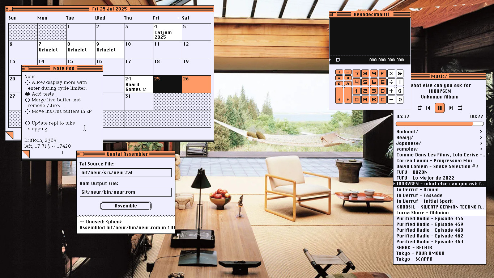

uxn

The Uxn ecosystem is a personal computing playground, created to host small tools and games, programmable in its own unique assembly language.
It was designed with an implementation-first mindset with a focus on creating portable graphical applications, the distribution of Uxn projects is akin to sharing game roms for any classic console emulator. To learn more, read about the uxn design, or see the technical documentation.
Desktop Versions
To run uxn programs on a desktop computer, you'll need an emulator for your operating system. Below are links to download the latest versions of the Uxn emulators for major systems, bundled with a few roms. Alternatively, you can download the emulators on their own for Linux, Windows and MacOS.
Linux Windows MacOSThe emulator comes bundled with a handful of tools, games and toys:
- calc, graphical calculator
- donsol, card game
- left, writing tool
- nasu, sprite editor
- noodle, sketch tool
- orca, livecoding tool
- turye, font editor
- catclock, desktop clock
- dexe, hex editor
- A Piano, piano toy
uxn guide
The uxn programs work on a variety of video game consoles and computers. The same Uxn rom can be used on a on a desktop computer, in a browser, on tiny electronics, and on modern handhelds.

The Linux/OSX desktop emulator requires SDL2. If you don't have it here's how to get it:
sudo pacman -Sy sdl2 # Arch sudo apt install libsdl2-dev # Ubuntu sudo xbps-install SDL2-devel # Void Linux brew install sdl2 # OSX
Startup

Double-click on uxnemu to launch it, on some Linux distribution, it might not be possible to do so, if for some reason uxnemu is not be clickable, navigate to the downloaded files in the terminal and launch it from there. To launch the ROM from the terminal, point the emulator to the target .rom file:
bin/uxnemu path/to/example.rom
The Uxn emulator can play rom files, which are small portable applications for the system. The Uxn package comes with basic applications, but there are many more to try, view the full list of available applications.
There are many ways to launch ROMs:
- With the launcher program, see preview image above
- By dragging .rom files onto the emulator window
- Via the terminal
Emulator Controls
F1toggle zoomF2toggle debuggerF3take screenshotF4load launcher.rom
Buttons
- L-CTRL A
- L-ALT B
- L-SHIFT SEL
- HOME START
Other Systems

Uxn can also run on classic consoles, on tiny electronics and modern electronics. Currently, there are ports(not all are complete) for GBA, Nintendo DS, Playdate, DOS, PS Vita, Raspberri Pi Pico, Teletype, ESP32, iOS, STM32, STM32, IBM PC, and many more.
See the full list of emulators.
Need a hand?
The following resources are a good place to start:
- AwesomeUXN list
- Uxntal(XXIIVV)
- Uxntal cheatsheet(XXIIVV)
- Uxntal reference(XXIIVV)
- Uxn tutorial(Compudanzas)
You can also find us in #uxn on irc.esper.net.
Uxn is currently under development, we use #uxn on irc.esper.net to coordinate development [07-05-21].